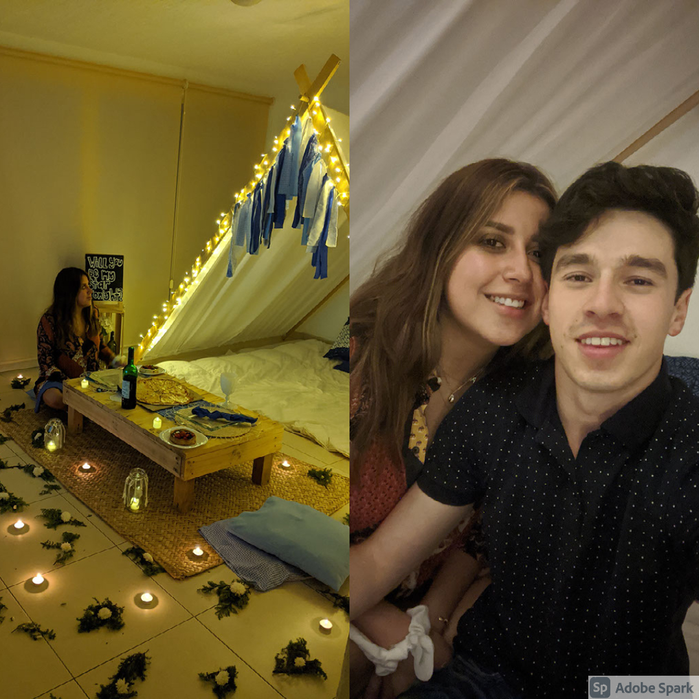
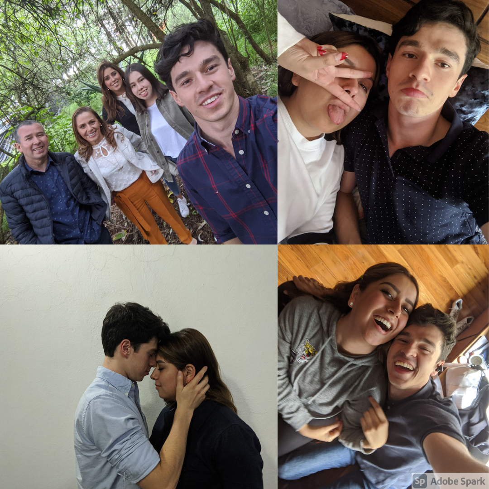
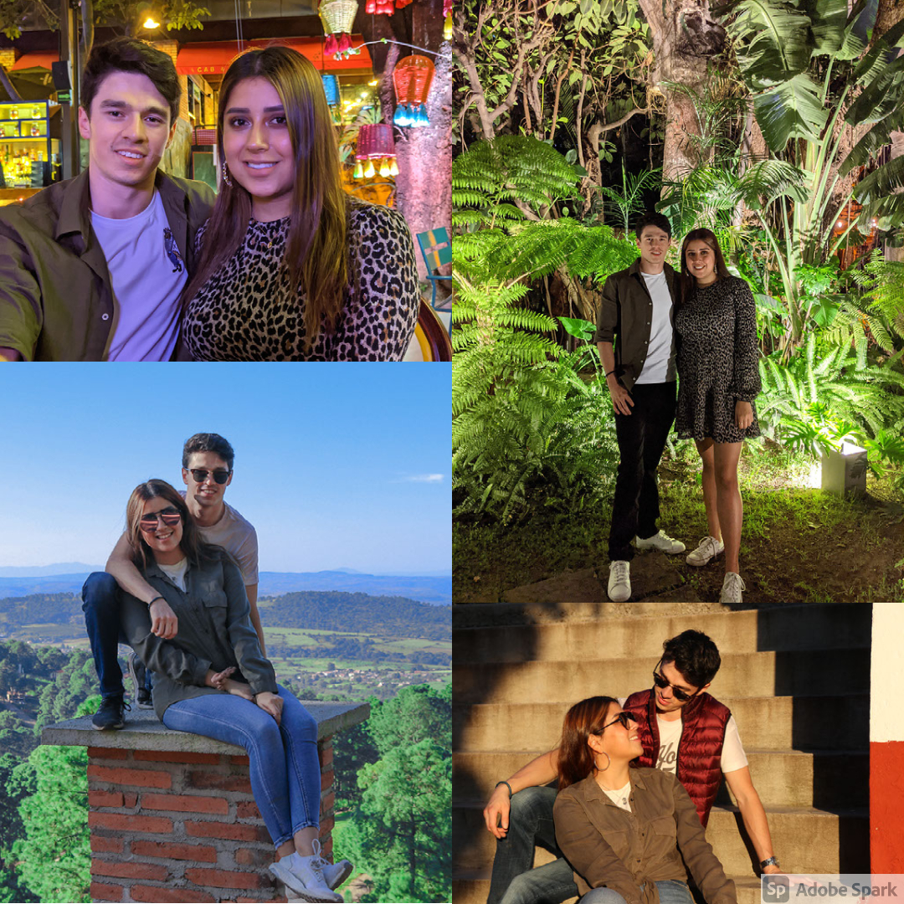
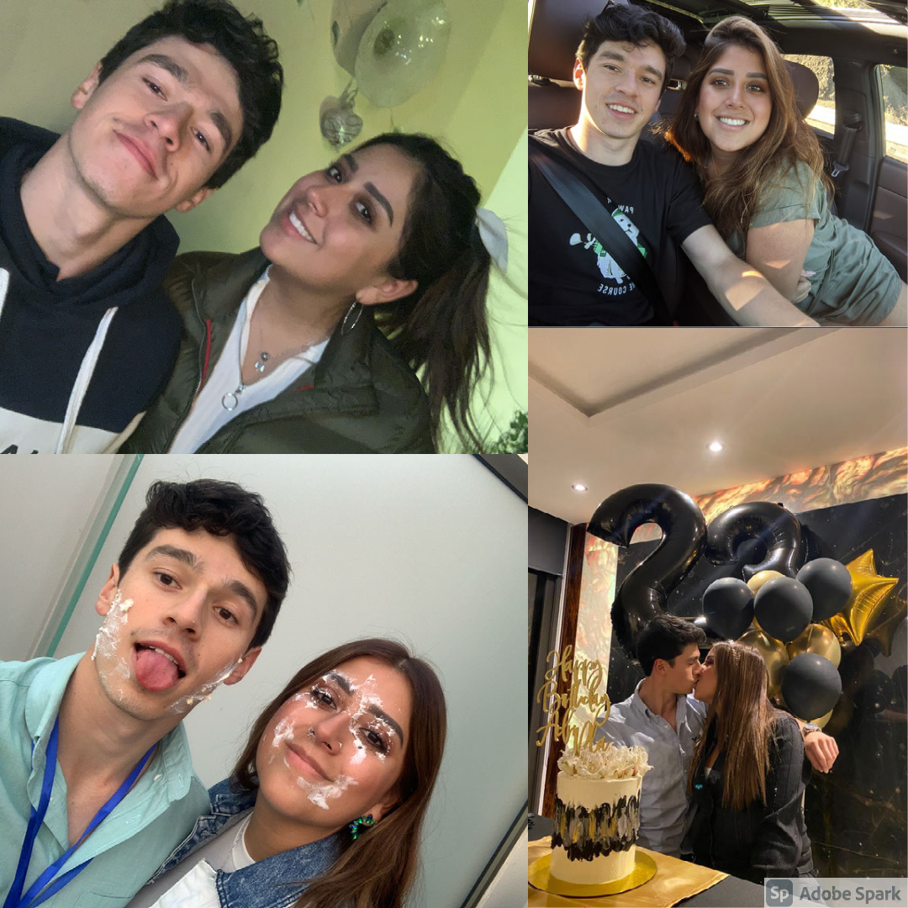
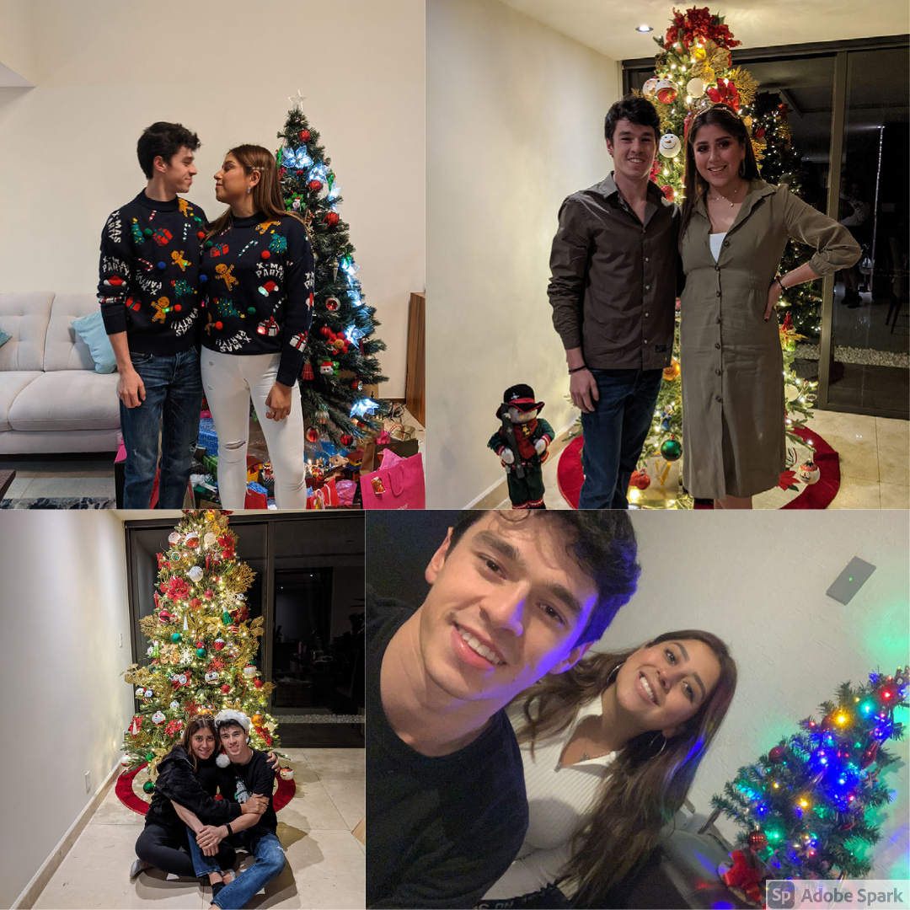
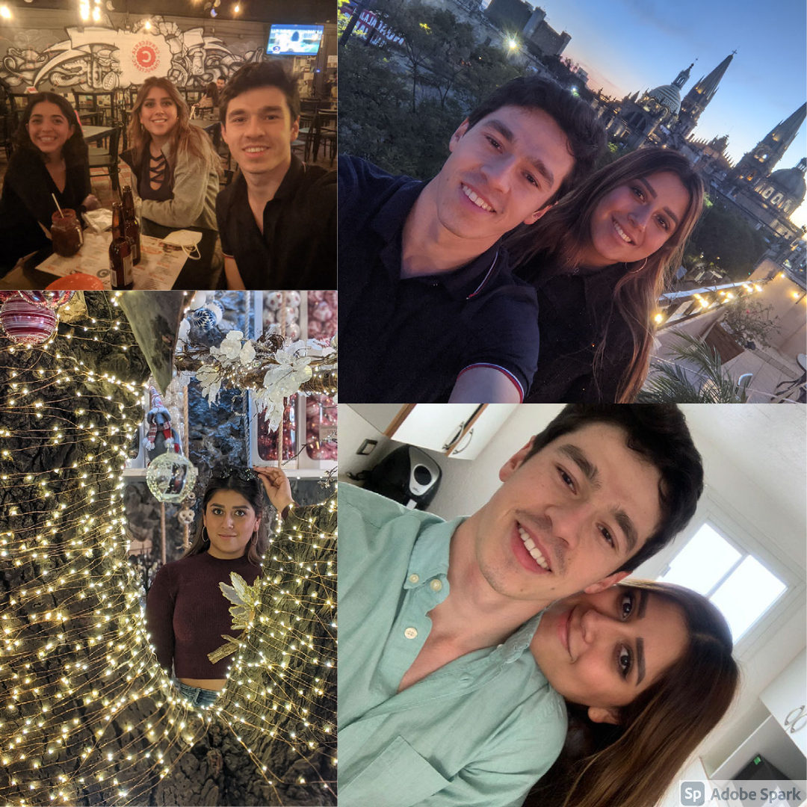
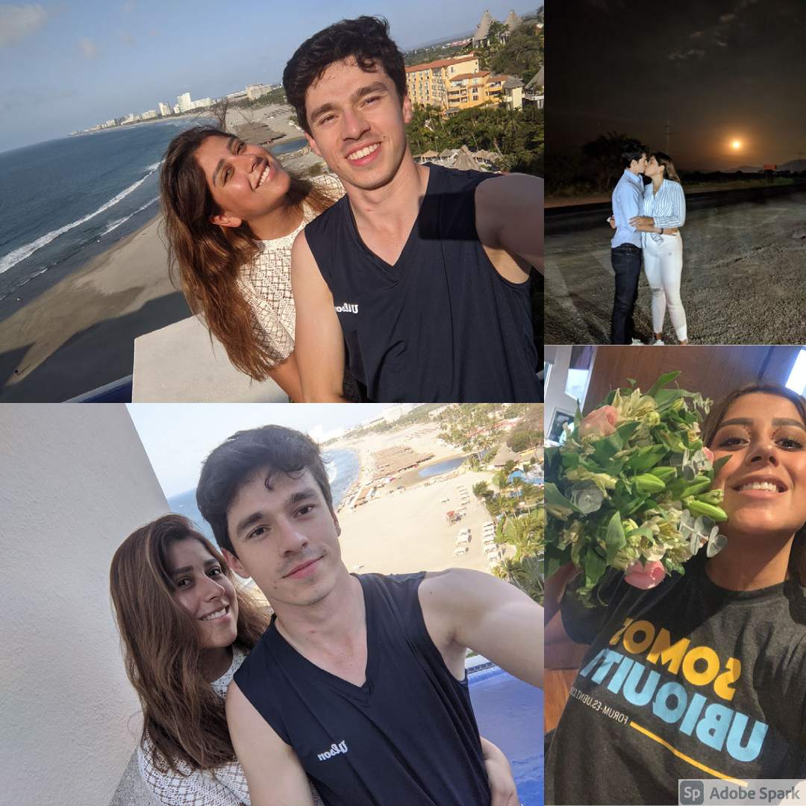
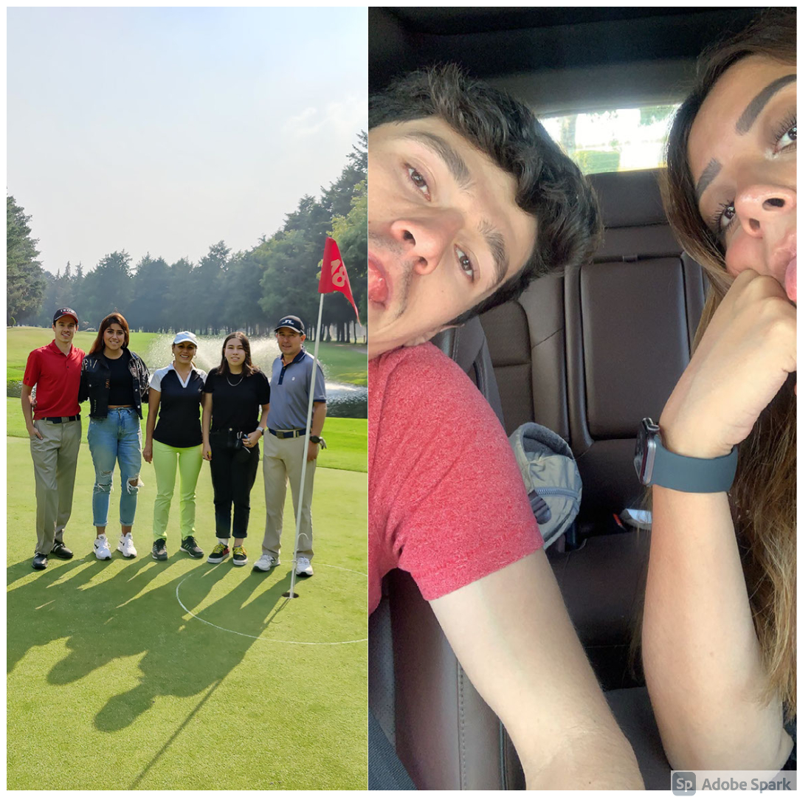
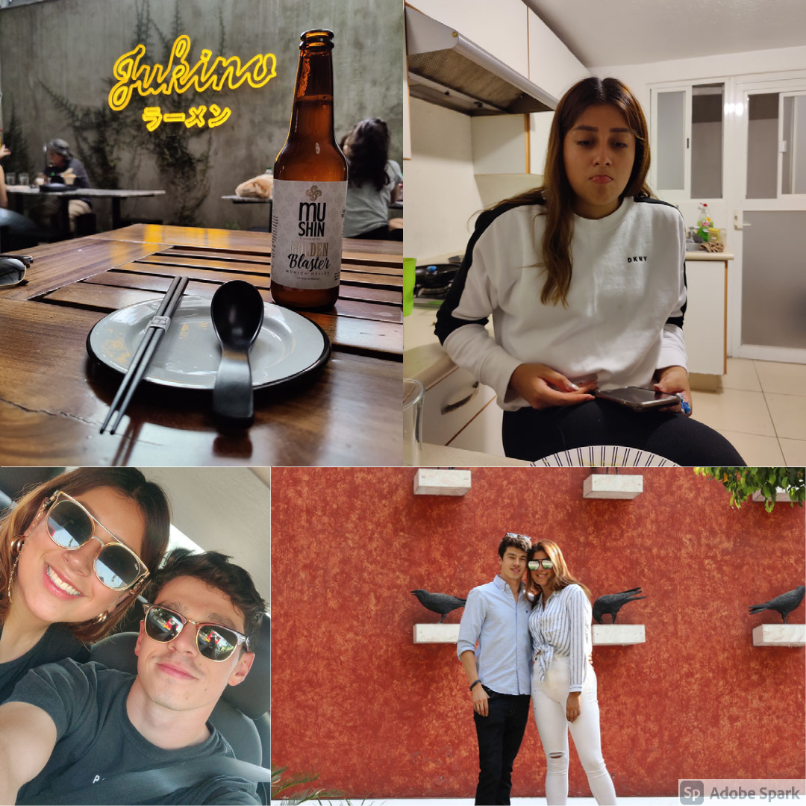
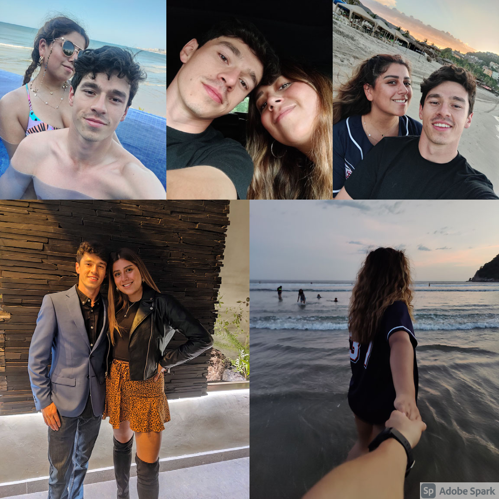

1 / 12

August
This is where our journey began. Although I already
knew I loved you at the time, I never even imagined I could love someone the way I love you
today. This is certainly one of the most beautiful memories I will have in my whole life.
Also, our first month of relationship full of uncertainty and excitement.
2 / 12

September
Our second month together. You met my family, we got
drunk together in Guadalajara, spent beautiful days in Mexico City. My love for you just
grew more and more with each day that passed.
3 / 12

October
One of the most beautiful birthdays I've ever spent,
all thanks to you. Also we made our trip to Mazamitla which was a wonderful night to
spend by your side. I will always love to meet new places by your side.
4 / 12

November
We made our trip to Monterrey to meet los primos,
which was very important for me. We also went to Acapulco for the very first time
together with my family and spent my mom's b-day with you. And of course, the main
event of the month and year: Your Birthday. One of the most memorable days of our
relationship. I love to seee you happy and love to grow old with you. Eles una viejita.
5 / 12

December
The most festive and happy Christmas yet. I had never
ever spent holidays with someone who wasn't my family. And this time it wasn't different
because it feels like we are already family. I loved spending every second of Christmas
and New Years with you. Even when we wore our matching ugly sweaters.
6 / 12

January
The start of one of the best years of my life, by your side.
It felt like a dream to start a new year and a new life by your side because everything was so
special and so perfect. I thought I couldn't be happier at the time, but you came and proved me
wrong every single new day that passed.
7 / 12
February
Valentines day meant nothing compared to the 6 months we
celebrated together. Time flies when we are together. But I love every single second of it.
It was our first big getaway together to celebrate half a year and I couldn't have pictured
anything more perfect. Aside from the sketchy bars and horrible Airbnb of course. None of that
matter obviously because when I'm with you, the outside world fades away.
8 / 12

March
A kiss underneath the moonlight, a little beach trip and your beatiful face with flowers. What more could I ask for?
9 / 12

April
There might not have been many pictures this month, but I for sure know you made me as happy as humanly possible, as you do every single day of our lives.
10 / 12

May
There will never be a time in life where I don't enjoy meeting new places with you. Nor will ever there be a time where I get tired of seeing your wonderful face while you're making drama. We made a little road trip to Tequila except this time you aren't that drunk to forget about most of it.
11 / 12
June
This is the month where I realized I have the greatest and most amazing caddie in golf. Only negative of this was that it happened in the worst possible conditions ever. We also took advantage of Jimmy's photo opportunity and stole the night as the power couple. At this point in life I'm more than certain that we are soul mates meant to find each other and make the other as happy as possible. Also, making a lot of drama while we're at it.
12 / 12

July
And this is basically where we stand baby. 12 whole months of love, fun, ablacitos, and most importantly, the 12 happiest months of my life yet.
Thank you for being there for me always, in the worst times, in the best times. Thank you for loving me at my best and my worst. Thank you for choosing me. I love you with all my heart
and soul, and look forward all the months we have left in our long lives together. Happy anniversary my love!
<
>